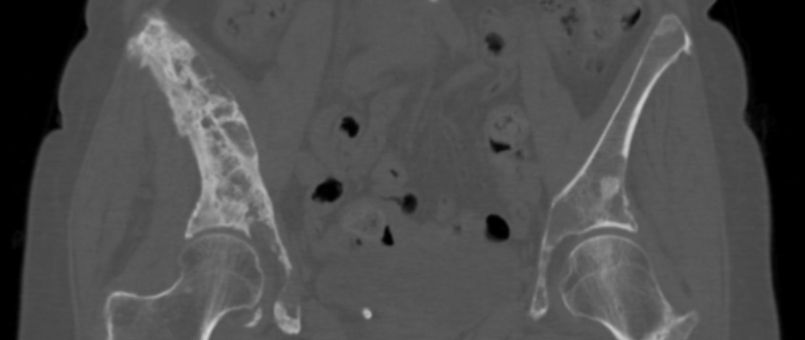

Ficha del catálogo
Metástasis óseas
- Sistema
- Óseo
- Modalidad
- TC
- Región
- Esqueleto axial
- Dificultad
- Intermedio
Son los tumores malignos más frecuentes del hueso en el adulto y superan con mucho a los tumores primarios. Se localizan sobre todo en el esqueleto axial, donde persiste médula ósea roja y el flujo sanguíneo es lento. Su detección cambia el estadio y el tratamiento, y suele plantearse el riesgo de fractura patológica.
Técnica
Tomografía con ventana ósea sobre el estudio de estadificación, complementada con resonancia de columna cuando se sospecha compromiso medular.
Qué observar
- Lesiones líticas múltiples con bordes mal definidos y destrucción cortical
- Lesiones blásticas densas y redondeadas, típicas de próstata y de algunas mamas
- Signo del pedículo ausente en la radiografía frontal de columna
- Afectación del muro posterior vertebral y componente epidural
- Distribución axial en columna, pelvis, costillas y fémures proximales
- Fractura patológica sobre lesión preexistente con trauma mínimo
Hallazgos
Múltiples focos líticos, blásticos o mixtos de distribución axial, con destrucción cortical variable y posible masa de partes blandas asociada.
Perlas
Las metástasis suelen respetar el disco intervertebral y afectar el pedículo, mientras que la infección destruye el disco y los platillos vecinos. Ese detalle resuelve la mayoría de las dudas entre tumor e infección vertebral.
Diagnóstico diferencial
- Mieloma múltiple
- Lesiones líticas en sacabocados sin reacción esclerótica y afectación difusa medular.
- Espondilodiscitis
- Destrucción del disco con afectación de dos platillos contiguos.
- Hemangioma vertebral
- Trabéculas verticales gruesas con contenido graso en resonancia.
Simuladores
- Islote óseo
- Enfermedad de Paget
- Cambios degenerativos escleróticos de platillos
Por modalidad
- RX
- Baja sensibilidad, requiere pérdida importante de matriz ósea
- TC
- Detecta lesiones y valora el riesgo de fractura
- RM
- Máxima sensibilidad para infiltración medular y compresión epidural
Protocolo
Tomografía con reconstrucciones en ventana ósea en los tres planos. Resonancia de columna completa si hay dolor axial o déficit neurológico.
Clasificación
Se describen como líticas, blásticas o mixtas. Los sistemas de valoración del riesgo de fractura consideran tamaño, localización y afectación cortical.
Errores frecuentes
- Revisar solo la ventana de partes blandas y omitir la ventana ósea
- Confundir islotes óseos benignos con metástasis blásticas
- No advertir el riesgo inminente de fractura en lesiones femorales grandes

metastasis oseas liticas blasticas columna fractura patologica estadificacion pedículo